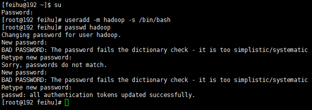
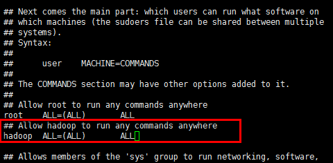
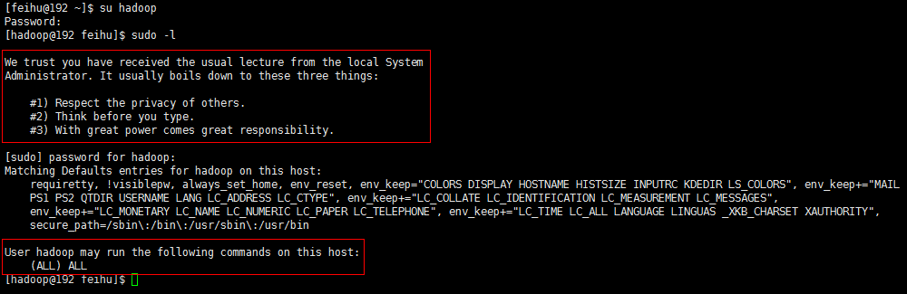
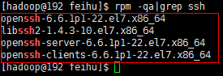
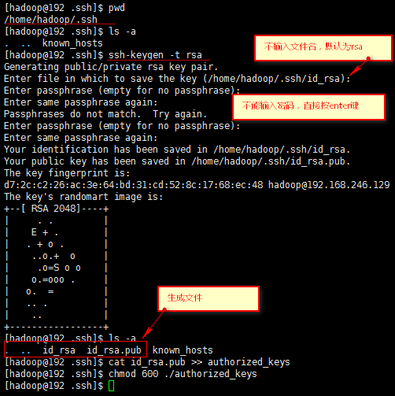

Linux常用配置
零、CentOS在虚拟机VMware上的安装
一、linux配置Hadoop用户
su #root用户登录 useradd -m hadoop -s /bin/bash #创建hadoop用户，不用创建user's home (-m) passwd hadoop #为hadoop创建密码
如下图所示：

二、为hadoop添加管理员权限
权限管理用到sudo命令，centos的sudo命令详细解释可以使用info sudo 命令查看，也可看
这里
sudo的配置文件是/etc/sudoers，可以用vi编译器，为了防止语法错误，建议带上语法检测，即用visudo，如下：
visudo #用vi编辑sudo配置文件，带上语法检测 下面是为hadoop用户配置管理权限添加的内容，这里赋予hadoop所有权限 ##Allow hadoop to run any commands anywhere #注释语句 hadoop ALL=(ALL) ALL #赋予权限语句，中间的空白是tab
实际操作如下图所示：

赋予权限后可以用以下命令查看hadoop的权限
su hadoop #切换到hadoop用户下 sudo -l #查看hadoop用户拥有的特殊权限
如下图所示：

三、SSH配置
1、检查SSH是否安装
rpm -qa|grep ssh #检查ssh是否安装
出现下图类似结果则说明ssh已经安装：

2、为了方便部署，配置SSH为无密码登录
首先，生成key文件ssh-keygen -t rsa， 按提示先yes然后一直回车，就会生成/root/.ssh/id_rsa.pub文件， 用scp把id_rsa.pub文件拷贝到另外一台需要访问的服务器，示例如下：
scp /root/.ssh/id_rsa.pub 192.168.1.2:~/.ssh/
ssh 192.168.1.2
cat .ssh/id_rsa.pub >> .ssh/authorized_keys
cat .ssh/id_rsa.pub >> .ssh/authorized_keys2
这样配置完scp或者ssh就可以不用输入用户名和密码了
ssh localhost #用ssh登录到本机 exit #退出ssh登录 cd ~/.ssh ssh-keygen -t rsa #生成密钥文件 cat id_rsa.pub >> authorized_keys #加入授权 chmod 600 ./authorized_keys #赋予权限
操作界面如下：

可以用ssh localhost登录验证是否需要输入密码。